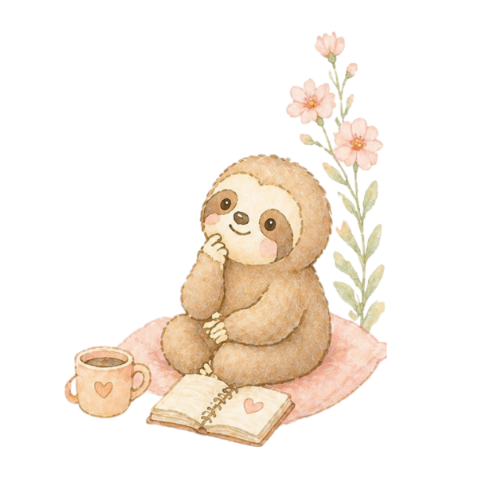

🖥 画面
🖨 印刷/PDF
🌿
✦
✧
🌿

Kokoron's Mindful Journal
こころん
と整える
7日間ジャーナル
🌿 朝と夜、1日2ページ · 7日間テーマ付き
瞑想 × ジャーナリング × セルフケア
このノートの使い方
朝ページ → 今日の気持ちを整える
夜ページ → 今日を振り返り、自分をねぎらう
書けない日があっても大丈夫🦥
🗑 書いた内容をすべてリセット
🦥 Loves Life｜モカ&こころん — こころんと整える7日間ジャーナル